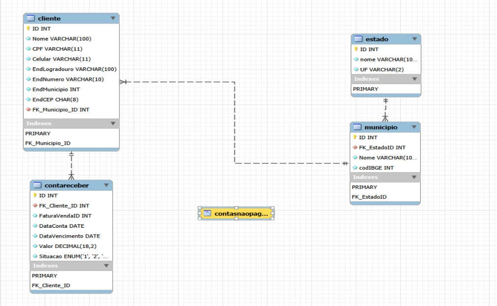
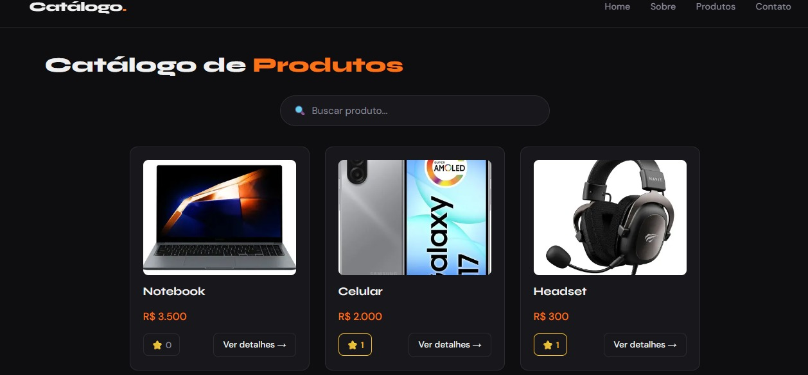
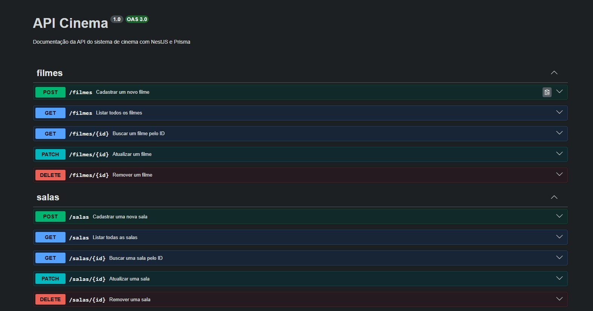

Atividades
Ver todos no GitHub ↗
Dashboard para Análise e Categorização de Dados
Projeto desenvolvido com conceitos de Estatística, Ciência de Dados e Inteligência Artificial, integrando ensino e prática profissional.
Ver notícia ↗
Sistema de Locação de Veículo
Sistema acadêmico para gerenciamento de locação de veículos, com cadastro de clientes e controle de frota.
 utilizando o software Workbench MySQL..jpeg)
Diagrama ER — MySQL Workbench
Modelagem de banco de dados relacional usando Diagrama Entidade-Relacionamento no MySQL Workbench.


Banco de Dados Relacional
Implementação de banco de dados relacional simples com queries SQL, tabelas normalizadas e relacionamentos.

Trabalho P2 Web
Aplicação web desenvolvida em Next.js (React), com componentes reutilizáveis e estilização em CSS, feita para a disciplina de Aplicações Web.
Ver no GitHub ↗
API Cinema
API REST para gerenciamento de um sistema de cinema (filmes, salas, sessões, ingressos e lanches), construída com NestJS, Prisma e PostgreSQL, com documentação via Swagger.
Ver no GitHub ↗